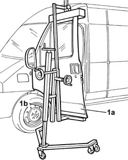
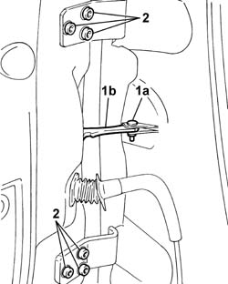

7210E36 R.R. FRONT SIDE DOOR
- Path
- Procedures > 72 PANELS AND FRAME > 7210 REMOVING REFITTING > 7210E EXTERNAL PARTS > 7210E36 R.R. FRONT SIDE DOOR
- Kind
- repair procedure (removal / refitting; the operation number is the code)
- Applies to
- all engines; all production periods
- Interactive page
- https://sloeber94.github.io/elrnDB-fDct/en/#/244001565
Applies to: all engines; all production periods
 Removing
Removing
 Refitting
Refitting- Disconnect the negative battery terminal.
1. Position a suitable support (1b) on the door (1a).

Applies to: all engines; all production periods
Op. 7040A20 LEFT DASHBOARD LOWER TRIM - R.R.
- Disconnect the connectors for the passenger side side door wiring.
 | Description | Connector |
|---|---|---|
. | Additional dashboard/left front door coupling | D016A |
| Description | Connector |
|---|---|---|
. | Additional dashboard/left front door coupling | D016B |
| Description | Connector |
|---|---|---|
. | Additional dashboard/right front door coupling | D017A |
| Description | Connector |
|---|---|---|
. | Additional dashboard/right front door coupling | D017B |
- Fasten a sensor to one of the passenger side door wiring connectors.
- Release the door wiring from the passenger compartment.
- Release the sensor from the door wiring connector.
1. Undo the bolt (1a) fixing the door check strap (1b) to the bodyshell.
2. Undo the bolts fixing the door hinges.

Applies to: all engines; all production periods
- Remove the front side door.
Applies to: all engines; all production periods
Refitting
Removing- Offer up the door in the fitting position, using a suitable support.
- Fasten the door check strap to the bodyshell tightening the fixing bolt.
- Fasten the door hinges tightening the fixing bolts.
- Secure the sensor to one of the door wiring connectors.
- Fit the door wiring in the special passages making use of the sensor.
- Release the sensor from the door wiring connector.
- Connect the electrical connectors for the passenger side door wiring.
| Description | Connector |
|---|---|---|
. | Additional dashboard/left front door coupling | D016A |
| Description | Connector |
|---|---|---|
. | Additional dashboard/left front door coupling | D016B |
| Description | Connector |
|---|---|---|
. | Additional dashboard/right front door coupling | D017A |
| Description | Connector |
|---|---|---|
. | Additional dashboard/right front door coupling | D017B |
Op. 7040A20 LEFT DASHBOARD LOWER TRIM - R.R.
- Connect the negative battery terminal.